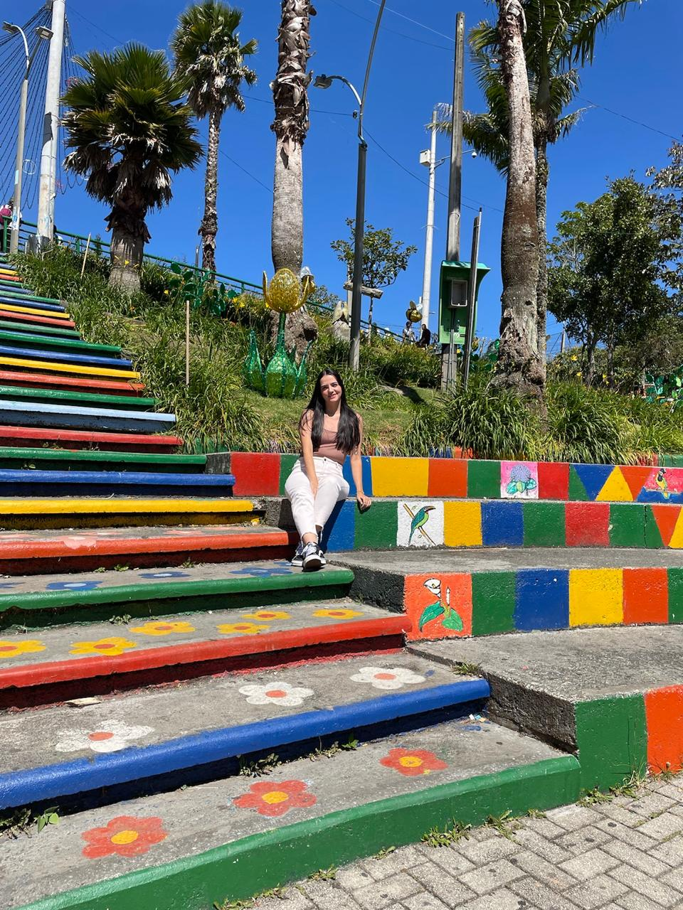
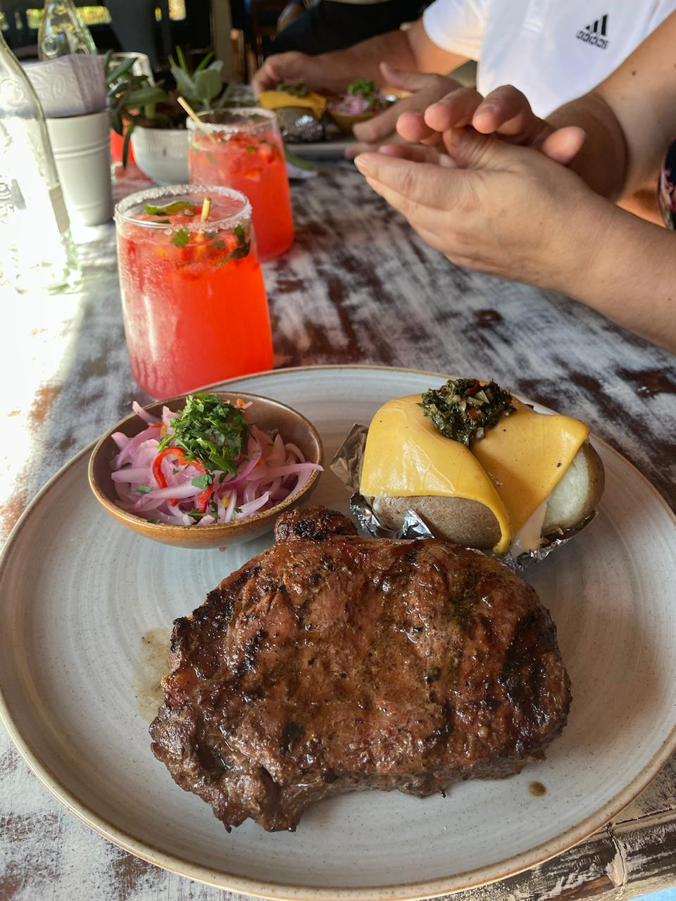
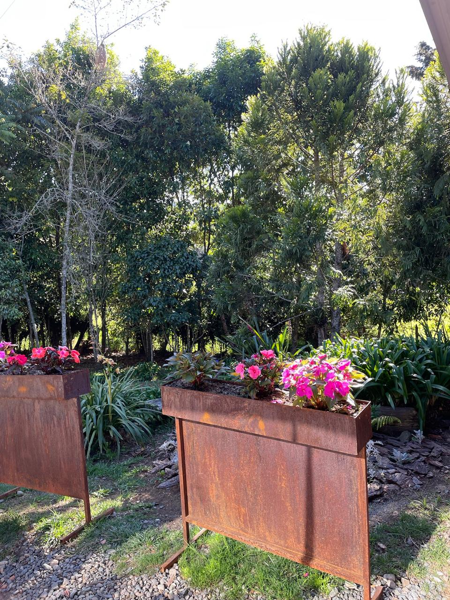
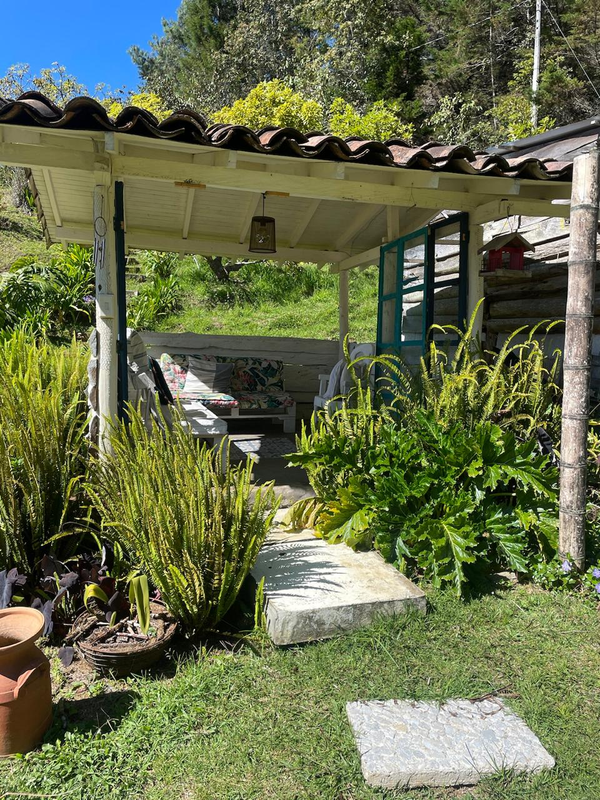

Santa Elena
Que hacer?
- Conocer su parque principal con sus escaleras de colores
- Alquilar una cabaña y relajarte cerca de la naturaleza
- Hacer un recorrido en una finca de silleteros y conocer el proceso
- Ir a la feria de las flores y ver las silletas
Te dejamos este video donde puedes ver un poco de lo que sera tu visita al pueblo de los silleteros
Donde comer?
@vacahamburguesasyparilla
Uno de los mejores restaurantes situado en las afueras de Santa Elena, con un ambiente hermoso de cabaña llena de flores donde podras probar una jugosa carne o una deliciosa hamburguesa, su soda de frutos rojos es muy recomendada, te dejamos estas imagenes del lugar para que veas lo lindo que es y te antojes
 @finca_la_comadreja
Este es un restaurante-bar vegetariano donde encontraras tambien una quesera y musica en vivo, 100% recomendado para una ocasion especial, celebrar cumpleaños o aniversarios, algunos dias tienen cata de quesos con reserva previa, el lugar es muy acogedor, hacen fogatas y tienen su propio parqueadero
@kakaw_santa_elena
por ultimo te dejamos esta chocolateria artesanal para que te comas un delicioso postre rodeado de naturaleza, aqui podras conocer el proceso del cacao, tomarte un chocolate, comerte una pizza artesanal y mucho mas, eso si, lleven abrigo por que hace frio
Donde hospedarse
Para Santa Elena decidimos la opcion de recomendarte un glamping: @tevaretreat aqui definitivamente vas a sentirte en el paraiso, es el lugar perfecto para desconectarte, estar cerca de la naturaleza, su comida es deliciosa y cuenta con jacuzzi privado en todas su cabañas. Es perfecto para un fin de semana romantico o en familia, que esperas?